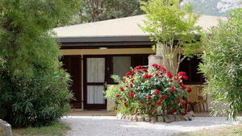

Alpinrunner
Trailrunning auf Korsika2018
Calvi
wir waren mit 29 Alpinrunner auf Korsika und konnten wunderschöne Trails laufen
Bericht und Fotos folgen
vom 20.bis 27. Mai 2018 Laufwoche in Korsika
Wir laufen herrliche Bergstrecken und geniessen die schöne Insel und das Feriendorf "Störrischer Esel" in Calvi. Das Wochenprogramm bietet viel Abwechslung. wir laufen auf technisch anspruchsvollen, alpinen Wegen, sowie wunderschöne Trails der Küste entlang und abwechslungsreiche Singletrails. Das Gebiet um Calvi bietet zudem viele Möglichkeiten für Ausflüge etc. ein kleiner Einblick zum Feriendorf "Störrischer Esel"
Ausgebucht
Das Leiterteam für Korsika
Teilnehmerliste

- Marco & Petra Jäger
- Brigitte Eggerling &Thomas Pfeffer
- Barbara Schuler
- Martin Lüönd
- Dani Zähner
- Maria & Röbi Conrad
- Joschi Furrer & Nartano Kottmann
- Corinne Arnold
- Christian Schmid
- Caroline Derungs
- Albert Thöni & Helen Arquint
- Doris Schwarz
- Micheline & Kwee Loy Pang
- Katharina Fodor & Rolf Bianco
- Maria Schmittel & Toni Friedrich
- Michel Zogg & Marina Calonder
- Jean-Marie Zogg
- Ruedi Wirz
- Thomas Tscharner
- Sabine Haas